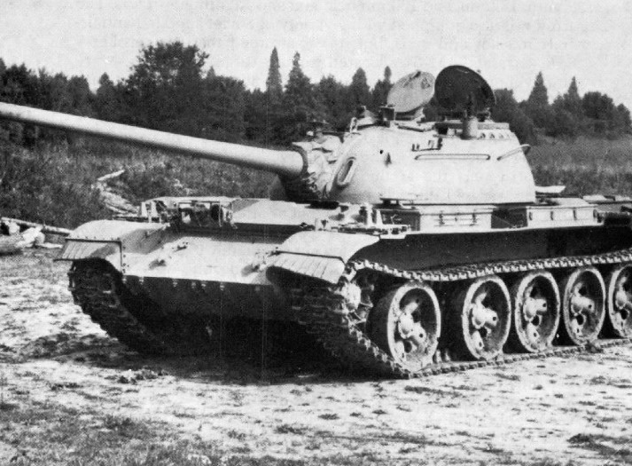

I'm a big fan of military hardware and tanks in particular. On this page I will talk about the russian T-54/55 series tank and give you some facts about it.

The t-54 was developed by the USSR and was produced from 1946 to 1983. It is the most produced tank ever with around 100,000 units built.
Below is a table to compare the t-54 with its contemporaries, a US M48 Patton and a British Centurion.| Tank | Front Turret Armour mm | Front hull Armour mm | Top speed kmh | Gun Size | Weight Tns |
|---|---|---|---|---|---|
| T-54/55 | 205 | 120 or 100 | 48 | 105mm | 36 |
| M48 Patton | 178 | 110 | 48 | 90mm | 45 |
| Centurion | 152 | 76 | 35 | 84mm | 52 |
This tank never saw combat against western powers, despite the massive numbers of them built during the cold war era, however this tank design forced the americans to design and produce a new tank to combat it, the M-60.

The T-54 soon upgraded to the T-55 which was mechanically very similar (and aesthetically almost identical) to the T-54.
The t-54/55 has ironically fought in every corner of the world except the place it was designed for, it was designed for use in the relative flatness of the european plains which is evident in the low amount of gun depression (how far down from horizontal) the main gun can shoot (The T-54 has a mere 5 degrees.) These tanks are still in use in many middle eastern and asian armies.